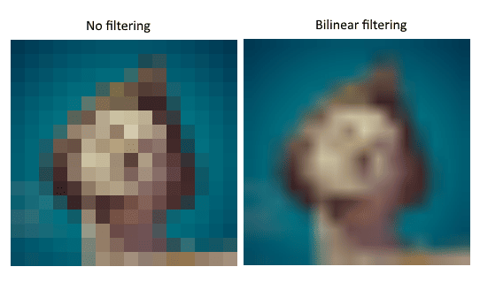
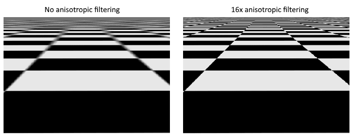
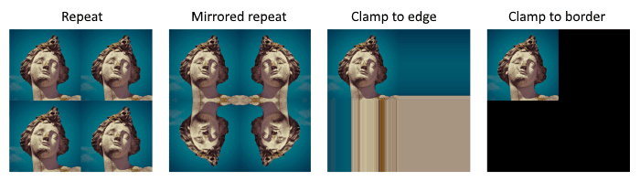
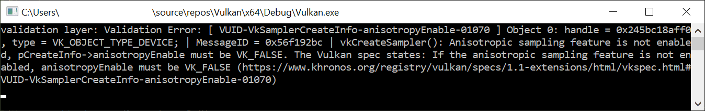

Image view and sampler
In this chapter, we’re going to create two more resources that are needed for the graphics pipeline to sample an image. The first resource is one that we’ve already seen before while working with the swap chain images, but the second one is new - it relates to how the shader will read texels from the image.
Texture image view
We’ve seen before, with the swap chain images and the framebuffer, that images are accessed through image views rather than directly. We will also need to create such an image view for the texture image.
Add a class member to hold a VkImageView for the texture image and create a new function createTextureImageView where we’ll create it:
vk::raii::ImageView textureImageView = nullptr;
...
void initVulkan()
{
...
createTextureImage();
createTextureImageView();
createVertexBuffer();
...
}
...
void createTextureImageView()
{
}The code for this function can be based directly on createImageViews.
The only two changes you have to make are the format and the image:
vk::ImageViewCreateInfo viewInfo{
.image = image,
.viewType = vk::ImageViewType::e2D,
.format = format,
.subresourceRange = {.aspectMask = vk::ImageAspectFlagBits::eColor, .baseMipLevel = 0, .levelCount = 1, .baseArrayLayer = 0, .layerCount = 1}};I’ve left out the explicit viewInfo.components initialization, because it is default initialized to vk::ComponentSwizzle::eIdentity anyway.
Finish creating the image view by calling the vk::raii::ImageView constructor:
textureImageView = vk::raii::ImageView(device, viewInfo);Because so much of the logic is duplicated from createImageViews, you may wish to abstract it into a new createImageView function:
vk::raii::ImageView createImageView(vk::Image const &image, vk::Format format)
{
vk::ImageViewCreateInfo viewInfo{
.image = image,
.viewType = vk::ImageViewType::e2D,
.format = format,
.subresourceRange = {.aspectMask = vk::ImageAspectFlagBits::eColor, .baseMipLevel = 0, .levelCount = 1, .baseArrayLayer = 0, .layerCount = 1}};
return vk::raii::ImageView(device, viewInfo);
}The createTextureImageView function can now be simplified to:
void createTextureImageView()
{
textureImageView = createImageView(*textureImage, vk::Format::eR8G8B8A8Srgb);
}And createImageViews can be simplified to:
void createImageViews()
{
assert(swapChainImageViews.empty());
swapChainImageViews.reserve(swapChainImages.size());
for ( auto &image: swapChainImages )
{
swapChainImageViews.emplace_back(createImageView(image, swapChainSurfaceFormat.format));
}
}Samplers
It is possible for shaders to read texels directly from images, but that is not very common when they are used as textures. Textures are usually accessed through samplers, which will apply filtering and transformations to compute the final color that is retrieved.
These filters are helpful to deal with problems like oversampling. Consider a texture mapped to geometry with more fragments than texels. If you simply took the closest texel for the texture coordinate in each fragment, then you would get a result like the first image:

If you combined the 4 closest texels through linear interpolation, then you would get a smoother result like the one on the right. Of course your application may have art style requirements that fit the left style more (think Minecraft), but the right is preferred in conventional graphics applications. A sampler object automatically applies this filtering for you when reading a color from the texture.
Undersampling is the opposite problem, where you have more texels than fragments. This will lead to artifacts when sampling high frequency patterns like a checkerboard texture at a sharp angle:

As shown in the left image, the texture turns into a blurry mess in the distance. The solution to this is anisotropic filtering, which can also be applied automatically by a sampler.
Aside from these filters, a sampler can also take care of transformations. It determines what happens when you try to read texels outside the image through its addressing mode. The image below displays some possibilities:

We will now create a function createTextureSampler to set up such a sampler object.
We’ll be using that sampler to read colors from the texture in the shader later on.
void initVulkan()
{
...
createTextureImage();
createTextureImageView();
createTextureSampler();
...
}
...
void createTextureSampler()
{
}Samplers are configured through a vk::SamplerCreateInfo structure, which specifies all filters and transformations that it should apply.
vk::SamplerCreateInfo samplerInfo{.magFilter = vk::Filter::eLinear, .minFilter = vk::Filter::eLinear};The magFilter and minFilter fields specify how to interpolate texels that are magnified or minified.
Magnification concerns the oversampling problem describes above, and minification concerns undersampling.
The choices are vk::Filter::eNearest and vk::Filter::eLinear, corresponding to the modes demonstrated in the images above.
vk::SamplerCreateInfo samplerInfo{.magFilter = vk::Filter::eLinear,
.minFilter = vk::Filter::eLinear,
.mipmapMode = vk::SamplerMipmapMode::eLinear,
.addressModeU = vk::SamplerAddressMode::eRepeat,
.addressModeV = vk::SamplerAddressMode::eRepeat,
.addressModeW = vk::SamplerAddressMode::eRepeat};The addressing mode can be specified per axis using the addressMode fields.
The available values are listed below.
Most of these are demonstrated in the image above.
Note that the axes are called U, V and W instead of X, Y and Z.
This is a convention for texture space coordinates.
-
vk::SamplerAddressMode::eRepeat: Repeat the texture when going beyond the image dimensions. -
vk::SamplerAddressMode::eMirroredRepeat: Like repeat, but inverts the coordinates to mirror the image when going beyond the dimensions. -
vk::SamplerAddressMode::eClampToEdge: Take the color of the edge closest to the coordinate beyond the image dimensions. -
vk::SamplerAddressMode::eMirrorClampToEdge: Like clamp to edge, but instead uses the edge opposite to the closest edge. -
vk::SamplerAddressMode::eClampToBorder: Return a solid color when sampling beyond the dimensions of the image.
It doesn’t really matter which addressing mode we use here, because we’re not going to sample outside of the image in this tutorial. However, the repeat mode is probably the most common mode, because it can be used to tile textures like floors and walls.
vk::PhysicalDeviceProperties properties = physicalDevice.getProperties();
vk::SamplerCreateInfo samplerInfo{.magFilter = vk::Filter::eLinear,
.minFilter = vk::Filter::eLinear,
.mipmapMode = vk::SamplerMipmapMode::eLinear,
.addressModeU = vk::SamplerAddressMode::eRepeat,
.addressModeV = vk::SamplerAddressMode::eRepeat,
.addressModeW = vk::SamplerAddressMode::eRepeat,
.anisotropyEnable = vk::True,
.maxAnisotropy = properties.limits.maxSamplerAnisotropy};The anisotropyEnable field specifies if anisotropic filtering should be used.
There is no reason not to use this unless performance is a concern.
The maxAnisotropy field limits the number of texel samples that can be used to calculate the final color.
A lower value results in better performance, but lower quality results.
To figure out which value we can use, we need to retrieve the properties of the physical device like so:
vk::PhysicalDeviceProperties properties = physicalDevice.getProperties();If you look at the documentation for the vk::PhysicalDeviceProperties structure, you’ll see that it contains a vk::PhysicalDeviceLimits member named limits.
This struct in turn has a member called maxSamplerAnisotropy and this is the maximum value we can specify for maxAnisotropy.
If we want to go for maximum quality, we can simply use that value directly.
You can either query the properties at the beginning of your program and pass them around to the functions that need them, or query them in the createTextureSampler function itself.
vk::PhysicalDeviceProperties properties = physicalDevice.getProperties();
vk::SamplerCreateInfo samplerInfo{.magFilter = vk::Filter::eLinear,
.minFilter = vk::Filter::eLinear,
.mipmapMode = vk::SamplerMipmapMode::eLinear,
.addressModeU = vk::SamplerAddressMode::eRepeat,
.addressModeV = vk::SamplerAddressMode::eRepeat,
.addressModeW = vk::SamplerAddressMode::eRepeat,
.anisotropyEnable = vk::True,
.maxAnisotropy = properties.limits.maxSamplerAnisotropy,
.compareEnable = vk::False,
.compareOp = vk::CompareOp::eAlways};samplerInfo.borderColor = vk::BorderColor::eIntOpaqueBlack;The borderColor field specifies which color is returned when sampling beyond the image with clamp to border addressing mode.
It is possible to return black, white or transparent in either float or int formats.
You cannot specify an arbitrary color.
samplerInfo.unnormalizedCoordinates = vk::False;The unnormalizedCoordinates field specifies which coordinate system you want to use to address texels in an image.
If this field is vk::True, then you can simply use coordinates within the [0, texWidth) and [0, texHeight) range.
If it is vk::False, then the texels are addressed using the [0, 1) range on all axes.
Real-world applications almost always use normalized coordinates, because then it’s possible to use textures of varying resolutions with the exact same coordinates.
samplerInfo.compareEnable = vk::False;
samplerInfo.compareOp = vk::CompareOp::eAlways;If a comparison function is enabled, then texels will first be compared to a value, and the result of that comparison is used in filtering operations. This is mainly used for percentage-closer filtering on shadow maps. We’ll look at this in a future chapter.
samplerInfo.mipmapMode = vk::SamplerMipmapMode::eLinear;
samplerInfo.mipLodBias = 0.0f;
samplerInfo.minLod = 0.0f;
samplerInfo.maxLod = 0.0f;All of these fields apply to mipmapping. We will look at mipmapping in a later chapter, but basically it’s another type of filter that can be applied.
The functioning of the sampler is now fully defined.
Add a class member to hold the handle of the sampler object and create the sampler with vkCreateSampler:
vk::raii::ImageView textureImageView = nullptr;
vk::raii::Sampler textureSampler = nullptr;
...
void createTextureSampler()
{
...
textureSampler = vk::raii::Sampler(device, samplerInfo);
}Note the sampler does not reference a vk::Image anywhere.
The sampler is a distinct object that provides an interface to extract colors from a texture.
It can be applied to any image you want, whether it is 1D, 2D or 3D.
This is different from many older APIs, which combined texture images and filtering into a single state.
Anisotropy device feature
If you run your program right now, you’ll see a validation layer message like this:

That’s because anisotropic filtering is actually an optional device feature.
We need to update the createLogicalDevice function to request it:
vk::StructureChain<vk::PhysicalDeviceFeatures2, vk::PhysicalDeviceVulkan13Features, vk::PhysicalDeviceExtendedDynamicStateFeaturesEXT> featureChain = {
{.features = {.samplerAnisotropy = true } }, // vk::PhysicalDeviceFeatures2
{.synchronization2 = true, .dynamicRendering = true }, // vk::PhysicalDeviceVulkan13Features
{.extendedDynamicState = true } // vk::PhysicalDeviceExtendedDynamicStateFeaturesEXT
};And even though it is very unlikely that a modern graphics card will not support it, we should update isDeviceSuitable to check if it is available:
bool isDeviceSuitable(VkPhysicalDevice device)
{
...
auto features = physicalDevice.template getFeatures2<vk::PhysicalDeviceFeatures2,
vk::PhysicalDeviceVulkan13Features,
vk::PhysicalDeviceExtendedDynamicStateFeaturesEXT>();
bool supportsRequiredFeatures = features.template get<vk::PhysicalDeviceFeatures2>().features.samplerAnisotropy &&
features.template get<vk::PhysicalDeviceVulkan13Features>().dynamicRendering &&
features.template get<vk::PhysicalDeviceVulkan13Features>().synchronization2 &&
features.template get<vk::PhysicalDeviceExtendedDynamicStateFeaturesEXT>().extendedDynamicState;
// Return true if the physicalDevice meets all the criteria
return supportsVulkan1_3 && supportsGraphics && supportsAllRequiredExtensions && supportsRequiredFeatures;
}The vk::raii::PhysicalDevice::getFeatures2 repurposes the vk::PhysicalDeviceFeatures struct to indicate which features are supported rather than requested by setting the boolean values.
Instead of enforcing the availability of anisotropic filtering, it’s also possible to simply not use it by conditional setting:
samplerInfo.anisotropyEnable = vk::False;
samplerInfo.maxAnisotropy = 1.0f;In the next chapter we will expose the image and sampler objects to the shaders to draw the texture onto the square.